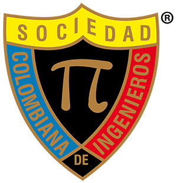
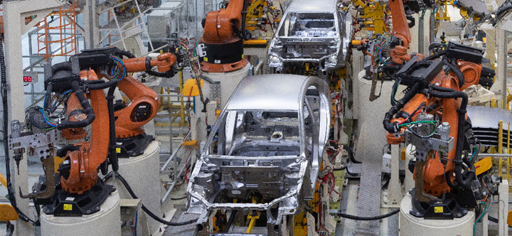
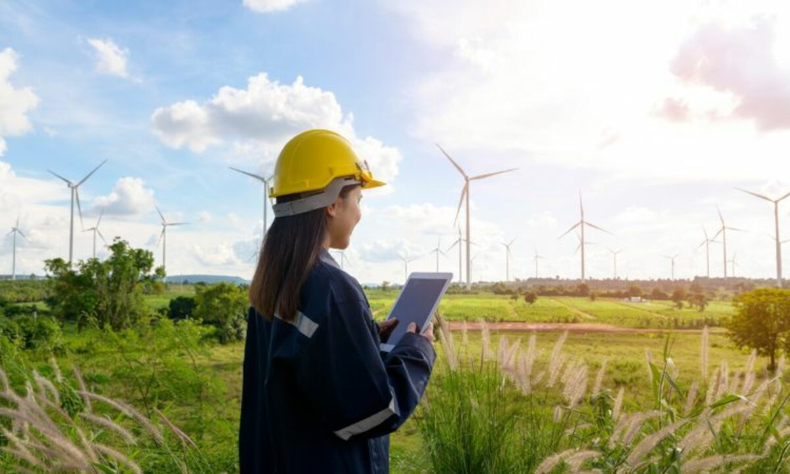
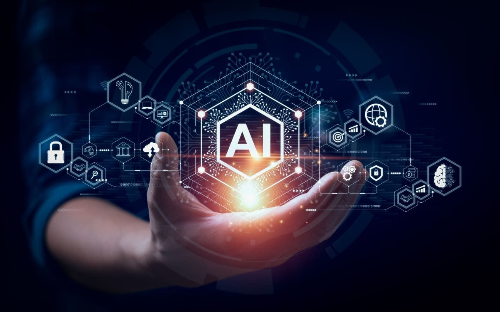

El Día del Ingeniero en Colombia se relaciona directamente con la creación
de la Sociedad Colombiana de Ingenieros (SCI). Esta organización
fue fundada el 29 de mayo de 1887 por un grupo de profesionales
visionarios: Diódoro Sánchez, Abelardo Ramos, Miguel Triana y Andrés Arroyo.
Desde su inicio, la SCI tuvo como misión promover el desarrollo del país a
través de la ingeniería, impulsar buenas prácticas profesionales y fortalecer
el reconocimiento de los ingenieros dentro de la sociedad.
Con el paso del tiempo, el 29 de mayo fue adoptado como la fecha oficial para
conmemorar el Día del Ingeniero Colombiano, ya que marca la fundación de la SCI.
Esta celebración fue ratificada en 1984, cuando se estableció también como el
Día de la Ingeniería Nacional.

Sociedad Colombiana de Ingenieros
En esta fecha, la SCI organiza una sesión solemne de aniversario, donde se
entregan los Premios Nacionales de Ingeniería y se otorgan reconocimientos
como la Orden al Mérito Julio Garavito, destinada a ingenieros destacados por
sus aportes al país.
Sin embargo, existe una confusión popular: en muchos lugares también se menciona
el 17 de agosto como Día del Ingeniero. Esto se debe a que varias instituciones
educativas y organizaciones gremiales adoptaron esa fecha de manera no oficial,
vinculándola posiblemente con el aniversario de otras asociaciones de ingeniería.
A pesar de esto, la SCI ha aclarado en varias ocasiones que el verdadero Día del
Ingeniero en Colombia es el 29 de mayo.
Ramas de la ingenieria
La ingeniería es una disciplina muy amplia, que se divide en diferentes ramas según
el área de conocimiento y el tipo de problemas que resuelve. Cada rama contribuye
al progreso de la sociedad de manera distinta, aportando soluciones en campos como
la construcción, la energía, la salud, la tecnología y la industria.
A continuación, algunas de las principales ramas de la ingeniería:
Ingeniería Civil
La ingeniería civil es una de las más antiguas y reconocidas. Se dedica al diseño,
construcción y mantenimiento de obras como carreteras, puentes, túneles, edificios,
presas, aeropuertos y sistemas de agua potable.
Los ingenieros civiles son responsables de garantizar la seguridad, funcionalidad
y sostenibilidad de estas infraestructuras.
Gracias a esta rama, las ciudades pueden crecer de forma ordenada y contar con
servicios básicos que mejoran la vida de millones de personas.
Ingeniería de Sistemas / Informática
Es una de las ramas más modernas y de mayor crecimiento. Se ocupa de la creación
de software, bases de datos, redes de comunicación, seguridad informática e
inteligencia artificial.
Los ingenieros de sistemas son clave en la transformación digital del mundo
actual, ya que desarrollan tecnologías que permiten la comunicación global, la
automatización de procesos y el avance de la ciencia.
Su campo de trabajo va desde el diseño de aplicaciones móviles hasta proyectos
de ciberseguridad y big data.
Ingeniería Eléctrica
Se centra en el estudio y la aplicación de la electricidad, la electrónica y el
electromagnetismo.
Los ingenieros eléctricos trabajan en la generación, transmisión y distribución
de energía eléctrica, diseñan equipos como transformadores, motores, sistemas
de iluminación y sistemas de potencia para industrias.
Sin esta rama, no sería posible la energía eléctrica confiable que llega a
nuestros hogares, hospitales y fábricas.
Ingeniería Mecánica
Es la rama que estudia el movimiento, la energía y las máquinas.
Un ingeniero mecánico diseña y mantiene motores, turbinas, vehículos, robots,
sistemas de refrigeración y equipos industriales.
Su impacto se nota en áreas tan variadas como la industria automotriz, la
robótica, la aeronáutica y la manufactura de productos.
Gracias a la ingeniería mecánica, hoy existen máquinas que hacen más fácil la
producción y la vida cotidiana.

Ingeniería Industrial
Su principal objetivo es mejorar la eficiencia de los procesos productivos.
Un ingeniero industrial analiza cómo funcionan las empresas y aplica métodos
para reducir costos, aumentar la productividad, mejorar la calidad y aprovechar
mejor los recursos humanos y tecnológicos.
Es una rama que combina administración, matemáticas, logística y tecnología,
siendo muy valorada en la gestión de empresas, fábricas y servicios.
Ingeniería Química
Aplica conocimientos de química, biología y física para transformar materias
primas en productos útiles.
Los ingenieros químicos trabajan en la industria alimentaria, farmacéutica,
textil, de combustibles, cosmética y de materiales.
Gracias a ellos contamos con medicamentos, fertilizantes, plásticos,
combustibles y hasta procesos para el tratamiento de agua.
Esta rama también juega un papel importante en la investigación de energías
limpias y sostenibles.
Ingeniería Ambiental
Se enfoca en el cuidado y protección del medio ambiente.
Un ingeniero ambiental diseña proyectos para reducir la contaminación,
gestionar residuos, proteger fuentes de agua, promover energías limpias y
fomentar el desarrollo sostenible.
En un mundo que enfrenta problemas como el cambio climático y la
explotación de recursos naturales, esta rama es cada vez más importante.

Aportes de la Ingeniería a la Sociedad
La ingeniería ha sido uno de los pilares fundamentales para el desarrollo de la
humanidad. Gracias a ella, hoy contamos con infraestructuras seguras como
carreteras, puentes, presas y aeropuertos que conectan a las comunidades y facilitan
el comercio. Asimismo, en el ámbito de la salud ha permitido la creación de equipos
médicos, hospitales modernos y sistemas de saneamiento que han mejorado la calidad
de vida y aumentado la esperanza de vida de millones de personas en todo el mundo.
Por otro lado, los avances en tecnología, energía y comunicaciones son fruto del
trabajo de ingenieros en distintas áreas. Desde la invención de la electricidad y
el internet, hasta el desarrollo de energías renovables, vehículos inteligentes y
sistemas de transporte masivo, la ingeniería ha transformado la forma en que
vivimos y trabajamos. Su aporte no solo impulsa el crecimiento económico, sino que
también contribuye a resolver los grandes desafíos globales, como la sostenibilidad,
el acceso al agua potable y el combate al cambio climático.
Considerado el padre de la ingeniería civil moderna.
Fue pionero en el uso de materiales innovadores y en el diseño de
estructuras hidráulicas. Uno de sus proyectos más reconocidos es
el faro de Eddystone, en Inglaterra, una obra que revolucionó la construcción marítima.
Ingeniero e inventor mexicano que desarrolló uno de los primeros
sistemas de televisión a color. Su aporte permitió la evolución de la comunicación
visual y fue un referente de la innovación tecnológica en América Latina.
Ingeniero, astrónomo y matemático colombiano. Sus investigaciones en
astronomía y física matemática fueron tan relevantes que la NASA nombró
un cráter de la Luna en su honor. Además, realizó importantes estudios
sobre economía y finanzas para el país.
Ingeniero eléctrico e inventor serbio-estadounidense, famoso por sus
contribuciones al desarrollo de los sistemas de corriente alterna (CA).
Sus trabajos sentaron las bases de la energía eléctrica moderna y
marcaron el rumbo de la ingeniería eléctrica en el mundo.
Ingeniero español considerado pionero en la automatización y robótica.
Creó máquinas de cálculo, dirigibles y el primer sistema de control remoto.
Sus inventos fueron esenciales para la ingeniería mecánica y de control.
Retos de la Ingeniería en el Siglo XXI
La ingeniería del siglo XXI enfrenta desafíos directamente relacionados
con los grandes problemas de la humanidad. Uno de los más importantes es
el cambio climático y la sostenibilidad ambiental: los ingenieros deben
diseñar infraestructuras más resistentes a fenómenos naturales, impulsar
el uso de energías renovables, optimizar el consumo de recursos y reducir
la huella de carbono de las industrias. A esto se suma el reto de la
urbanización acelerada, que exige soluciones innovadoras para la
movilidad, la vivienda, el agua potable, el manejo de residuos y la
creación de ciudades inteligentes capaces de integrar tecnología,
eficiencia y sostenibilidad.
Otro gran reto es la revolución tecnológica. Los ingenieros tienen que
adaptarse a la inteligencia artificial, la automatización, la robótica,
el big data y la ciberseguridad, herramientas que están transformando
todos los sectores productivos. Además, existe el compromiso de mejorar
la equidad social, garantizando que los avances tecnológicos lleguen a
comunidades vulnerables y contribuyan a reducir la desigualdad.
En resumen, la ingeniería moderna debe ser más que técnica: debe ser
ética, sostenible e inclusiva, buscando siempre el bienestar de las
personas y del planeta.

Frases Célebres sobre Ingeniería
La ingeniería no solo se reconoce por sus obras y aportes técnicos,
también ha inspirado reflexiones y frases que muestran su importancia en la vida humana.
A continuación, algunas de las más célebres que representan la esencia de esta profesión:
"Los científicos sueñan con hacer grandes cosas. Los ingenieros las hacen realidad."
– James A. Michener
"La ingeniería es la profesión donde el conocimiento de la ciencia y las matemáticas
se aplican al beneficio de la humanidad."
– Theodore von Kármán
"La ciencia puede entusiasmar a los hombres, pero solo la ingeniería puede cambiar el mundo."
– Isaac Asimov
"Un ingeniero es alguien que hace por un peso lo que cualquier tonto puede hacer por dos."
– Arthur Mellen Wellington
"La ingeniería es el arte de dirigir las grandes fuentes de poder de la naturaleza
para el uso y conveniencia del hombre."
– Thomas Tredgold
Reflexiones que muestran el espíritu de la ingeniería